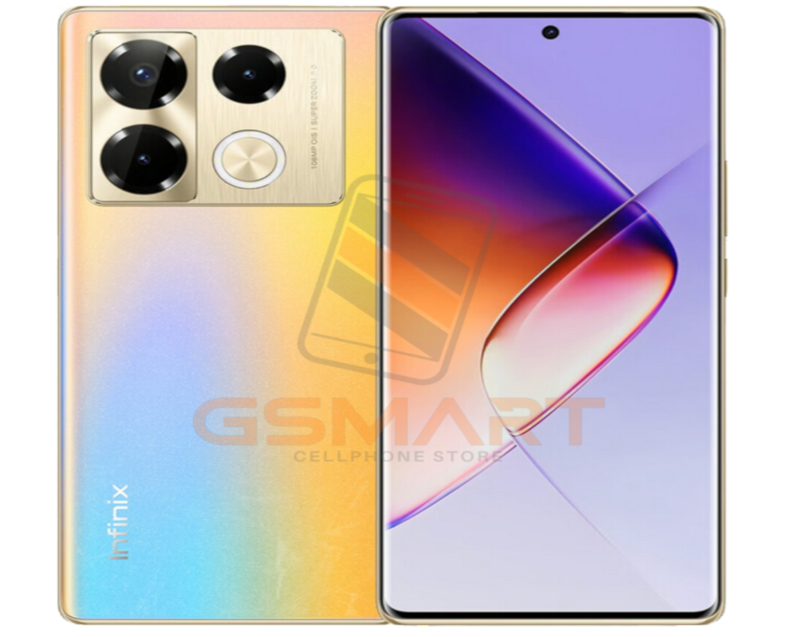

Infinix Note Pro
El Infinix Note Pro es un teléfono inteligente con características avanzadas y un diseño elegante.
- Pantalla: AMOLED de 6.67 pulgadas con resolución FHD+ (1080x2400), tasa de refresco de 120 Hz, brillo máximo de 900 cd/m² y relación de contraste de 5000000:1.
- Procesador: Octa-core MediaTek Helio G99 (6nm) con una frecuencia máxima de 2.2 GHz.
- Memoria: RAM LPDDR4X de 8 GB, expandible hasta 12 GB mediante tarjeta MicroSD.
- Almacenamiento: UFS Storage 3.1 de 256 GB, expandible hasta 1 TB mediante tarjeta MicroSD.
-
Cámara: Triple cámara con:
- Sensor principal de 50 megapíxeles con zoom 3x integrado.
- Sensor de profundidad de 2 megapíxeles.
- Sensor macro de 2 megapíxeles.
- Cámara frontal de 8 megapíxeles.
- Batería: 4500 mAh con carga rápida de 33 W y soporte para carga inalámbrica de 15 W.
- Sistema operativo: Android 12 con XOS 12.
- Conectividad: 4G, Wi-Fi 6, Bluetooth 5.2, NFC, USB-C, jack de audio de 3.5 mm.
- Seguridad: Sensor de huellas dactilares integrado en la pantalla.
- Diseño: Curvas en los laterales, protección Gorilla Glass y diseño Active Halo Design con LED de notificaciones configurable.
-
Características adicionales:
- Altavoces estéreo con tecnología de audio Hi-Res y integración con JBL.
- Refrigeración líquida para mejorar el rendimiento y la eficiencia energética.
- IP53 certificada, resistente a salpicaduras y humedad.
$200